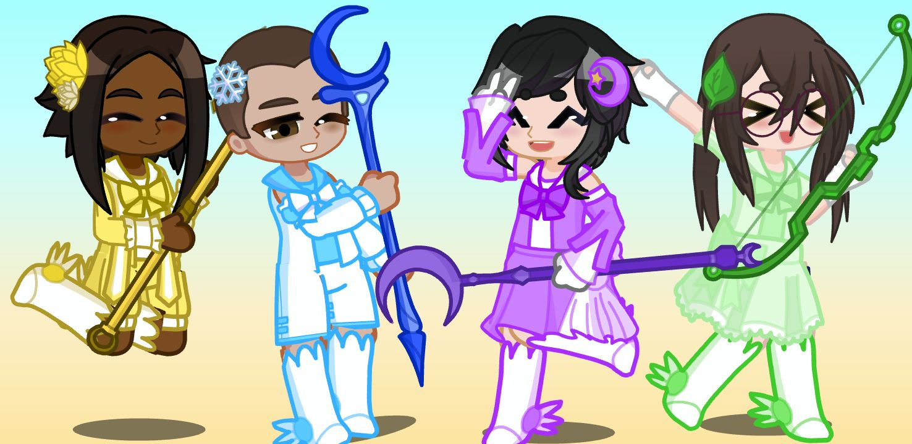

Glitterblood is a 2025 Gacha club/Gacha life 2 animated series made by Ollie/Oliver (Me!). It follows the life of Dre Carter, a teenage boy living in Southeast Michigan, who becomes magical boy and is accompanied by his friends and a lamb fairy named Tanpopo.
Meet the characters!
Official Spotify playlist!